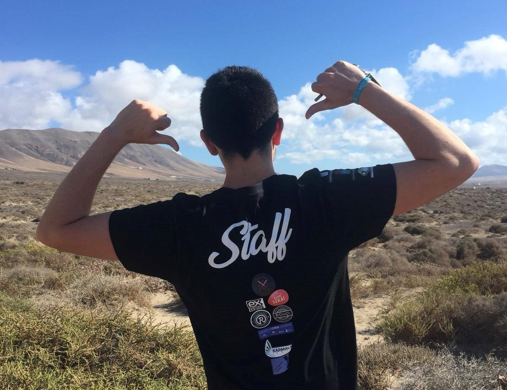
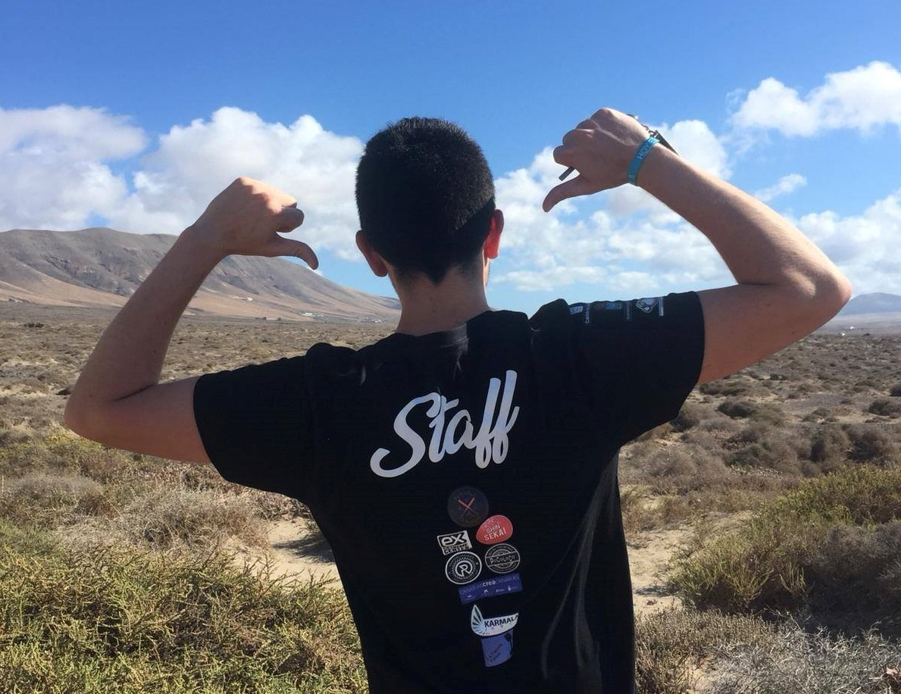

Creando participación desde 1984
Bienvenida a la página de la ONG Prensa Juvenil Canaria. Aquí podrás encontrar todas las novedades además de información sobre nuestra entidad.
Bienvenida a la página de la ONG Prensa Juvenil Canaria. Aquí podrás encontrar todas las novedades además de información sobre nuestra entidad.
